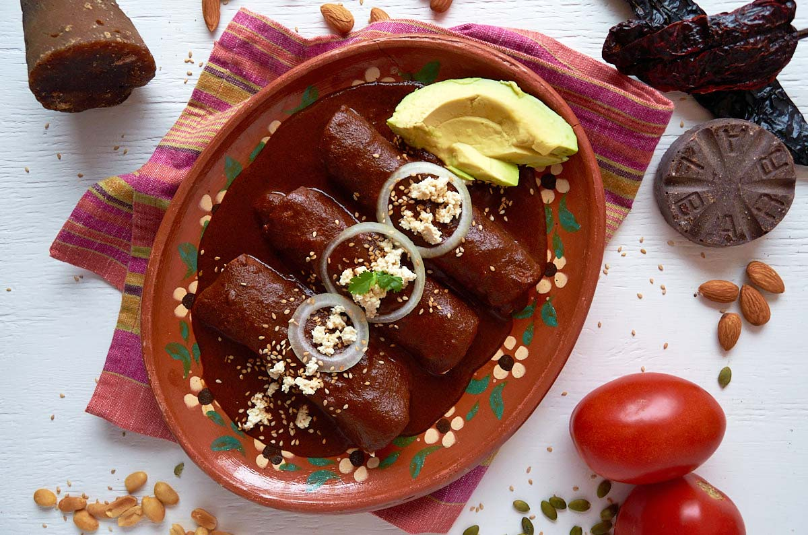

Home
Mole Recipe

Description
Mole poblano has long been considered one of the jewels of Mexican cuisine, a
true traditional Mexican dish. Its complex flavor is a combination of sweet,
spicy, and earthy made possible by more than 23 different ingredients. This
version of mole is from the city of Puebla, thus the name poblano, and is one of my
absolute favorites!
This recipe for mole poblano sauce is from the talented Chantall Vigueras of @mamavegetal,
who is originally from Puebla, so you know this is an authentic recipe! I have to be
honest with you, making mole poblano can take quite a bit of time, but Chantall does a
great job of breaking down the recipe in a very manageable way. Plus it is naturally vegan!
Ingredients
- 6 dried mulato chiles
- 6 dried pasilla chiles
- 3 dried chipotle chiles
- 1 small white onion
- 2 to 3 Roma tomatoes
- 3 cloves garlic
- ½ cup vegetable oil
- 7 dried ancho chiles
- 4 ¼ cups water or vegetable stock
Steps
- Clean and remove the seeds and stems from the dried chiles. Using a comal or cast
iron pan set to medium heat, toast the chiles for 30 seconds on each side. Be
careful not to burn them or the sauce will be bitter. Once they are lightly toasted
place them in a heat proof bowl and pour boiling water over them. Let them soak for
15 minutes.
- While the chiles are soaking, bring a medium pot of water to a simmer and add the
tomato, onion, and garlic. Simmer for about 6 to 7 minutes or until the tomates
begin to lose their skins and the onion is tender. Drain and add to the blender.
- Once the chiles are soft and pliable, drain them and add to the blender with
enough water to get the blender to puree smoothly, about 1 1/2 cups. Transfer
this sauce to a large bowl.
- Heat a large sauté pan to medium-high heat and add vegetable oil. Fry the
bolillo, tortillas, plantian, almonds, peanuts, raisins, sesame seeds and
spices one at a time until golden brown. Transfer to a large bowl.
- Place all of the fried ingredients in the blender in batches, adding enough
water to get it to puree the sauce smoothly. Transfer to the bowl with the
chile sauce and stir to incorporate.
- In a large pot, set to medium heat, pour in the mole sauce. Reduce heat to low
and simmer for 20 minutes stirring constabtly. When you see the fat rise to the
top of the sauce then you add the piloncillo, vegetable bouillon, and chocolate.
Simmer another 20 minutes, stirring constantly, until the piloncilo and chocolate
completely dissolve.
- Taste and adjust seasosing with salt and pepper if needed. Let cool in pot.
Now it is ready to use or store.